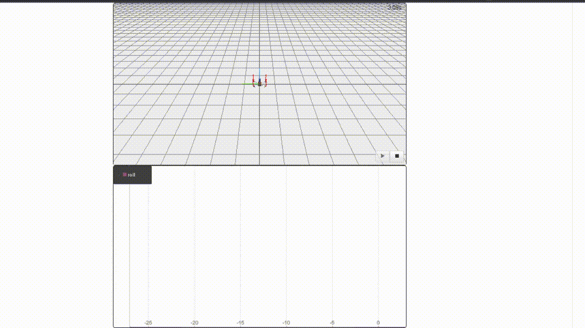

Drones

O que são drones?¶
Popularmente chamado de DRONES, é tambem conhecido como Veículos Aéreos Não Tripulados VANTs ou Aeronave Remotamente Pilotada RPAs ou UAVs. Na literatura encontramos algumas diferenças entre cada um deles, mas para o caso vale saber que os VANTs foram criados para atuar inicialmente na área militar, existe registro do uso desde a decada de 80 pela força aérea israelense. Nos dias atuais já são utilizados em diversas aplicações nas mais diversas áreas tais como comercial, industrial, entreterimento, e muito mais...
Regulamentação de drones no Brasil¶
No Brasil, a regulamentação dos é feita em conjunto por meio de três órgãos: ANAC, ANATEL e DECEA.
Cada órgão é responsável por uma área que envolve a operação dos drones.
Classes de aeronaves remotamente pilotadas¶
- Classe 1: RPAs com peso máximo de decolagem maior que 150 kg;
- Classe 2: RPAs com peso máximo de decolagem maior que 25 kg e menor ou igual a 150 kg;
- Classe 3: RPAs com peso máximo de decolagem maior que 250 g e menor do que 25 kg;
Para saber mais acesse o site da ANAC - Agência Nacional de Aviação Civil
Regras de operação sobre Classe3¶
A ANAC define:
- Ser maior de 18 anos;
- Equipamentos com peso máximo de decolagem acima de 250g precisam ser cadastrados no SISANT;
- É obrigatória a contratação de seguro de responsabilidade civil, chamado de Seguro RETA;
- Altura máxima de voo é de 400 pés ou 120 m de altura. Acima desta altitude é necessário ter uma certificação de pilotagem específica;
- Distância mínima horizontal de 30 metros em relação a pessoas, casas, prédios, veículos e animais.
- Estar afastado pelo menos 5 km de distância de aeródromos (Aeroporto);
E o DECEA - Departamento de Controle do Espaço Aéreo:
- Para realizar uma operação de voo é necessário solicitar uma autorização de voo junto ao DECEA, através do sistema Sarpas.
-
De modo geral devem ser observadas as seguintes diretrizes do DECEA (ICA 100-40)
- 30 metros de distância de pessoas não anuentes
- Altura máxima de até 400ft (aproximadamente 120 metros) distante acima de 05 NM (aproximadamente 9 Km) de aeródromos ou helipontos cadastrados
- Altura máxima de até 100ft (aproximadamente 30 metros) se distante entre 03 NM (aproximadamente 5,4 Km) e 05 NM (aproximadamente 9 Km) de aeródromos ou helipontos cadastrados;
-
Mais informações no site: https://www.decea.mil.br/drone/
E a ANATEL:
- Homologação do módulo de radiofrequência e controle remoto.
Algumas empresas no Brasil¶
- https://www.speedbird.aero/#aircraft
- https://skydrones.com.br/
- https://www.dronepulverizadoragricola.com.br/
- https://aldrones.com.br/
Progress
Continuar...
Dos tipos de VANTs¶
Os drones são classificados entre os multirotores e os de asa fixa.
multirotores¶
Drones multirotor são construídos com um corpo central e múltiplos rotores que rotacionam hélices para manobrar a aeronave. Os mais comuns são os que possuem quatro (quadricópteros), seis (hexacópteros) ou oito (octacópteros) rotores, mas podemos encontrar drones outras combinações relativas a quantidade de rotores. Uma vez no ar, um drone multirotor varia a velocidade relativa de cada rotor para alterar o torque, permitindo uma gama de movimentos.
Asa fixa¶
O drone de asa fixa é um projeto mais tradicional de aeronave, semelhante a um avião. Eles são feitos de um corpo central que tem duas asas e, geralmente, uma única hélice. Uma vez no ar, as duas asas geram sustentação que compensa seu peso permitindo que a aeronave permaneça em vôo.
Por causa disso, eles só precisam usar energia para seguir em frente, não para se manter no ar.

Progress
Continuar...
Como um drone voa?¶
De forma simetrica, as helices empuram o ar para baixo, logo o torque resultante dos 4 motore faz com que o drone decole, pouse, avance, recue e etc... O controle na velocidade das helices resulta na beleza dos movimentos que o drone é capaz de realizar.

Sistema de coordenadas¶
A orientação é especificada em Notação de ângulos de Euler XYZ (roll,pitch,yaw), (φ,θ,Ψ). Os seis graus de liberdade do drone, que consistem nos movimentos de translação nos eixos: x, y e z; e os movimentos de rotação, roll (arfagem), pitch (rolagem) e yaw (guinada).

Avaliação da variação angular em roll.
